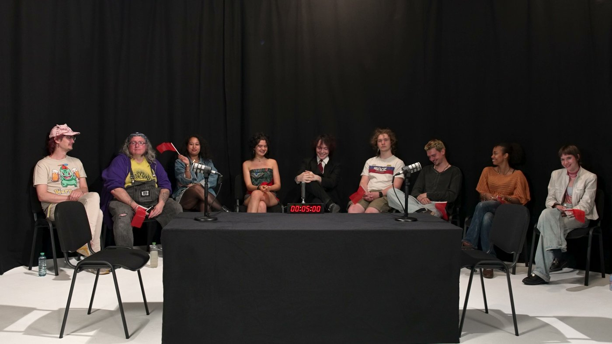
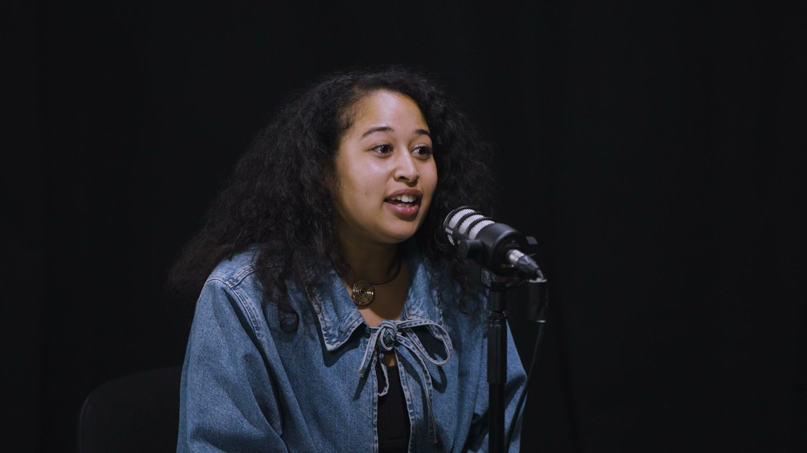

(Case 06) Long-form · YouTube
The Break-Out
One of our productions: a discussion format in the ‘authority vs. group of people’ style, set up and produced by PLACEMedia from concept to release — shot with 7 cameras in a film studio in Vienna. 1.2M views, 375.9K hours of watch time and +6K subscribers.

The brief
A discussion format in the ‘authority vs. group of people’ style: one voice facing a whole group at one table, theses on screen, red flags in hand — set up, shot, cut, packaged and released as one production.
What we did
- Concept and format: authority vs. group, theses on screen, a red-flag counter for the group
- Set-up and shoot in a film studio in Vienna: 7 cameras, 2 videographers and 1 audio engineer, including intros of the participants
- Edit and sound, from the raw cut to the final film
- Thumbnail and packaging for the release
- Clipping strategy in post: short-form clips by topic, each cut in two versions for review
Source: YouTube Studio, as of 16 November 2026: 1.2M views, 375.9K hours of watch time, +6K subscribers.




Planning something like this?
Start a project →